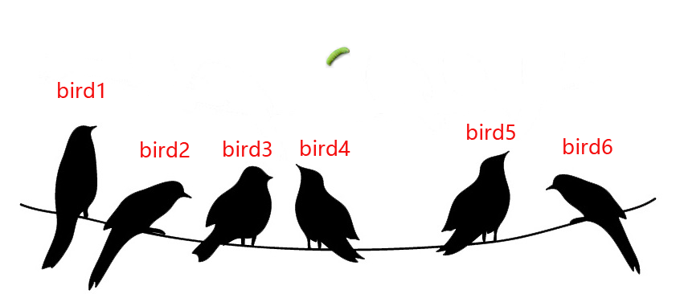
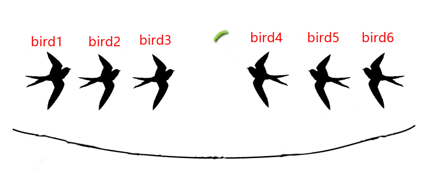
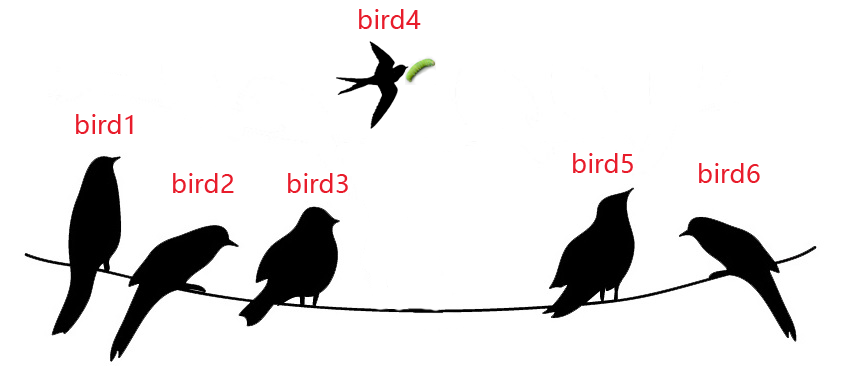

C++性能榨汁机之惊群问题
一个小场景
在开始正式讨论我们的问题之前，我们先想象这么一个小场景：
场景1：6只小鸟停在电线上休息，都在等待食物。
场景2：我们向鸟群投放一条小虫，作为它们的食物。

场景3：6只小鸟看到有食物到来，都停止休息，一起飞起来去抢夺食物。

场景4：最终只有一只小鸟（bird4）能够吃到食物，其他小鸟无奈而又伤心的回到电线上继续休息。

何谓惊群问题？
上面我们的小场景实际就是一个现实中的惊群问题，明明只有一条小虫子子到来，6只小鸟却都要停止休息去抢夺食物，除了抢到食物的小鸟，其他抢不到食物的小鸟又需要重新飞回去休息，对于这部分小鸟来说，无谓浪费了很多体力。
那么计算机中惊群又是什么样呢？其实与上述场景类似，多个线程（或者进程）同时等待一个事件的到来并准备处理事件，当事件到达时，把所有等待该事件的线程（或进程）均唤醒，但是只能有一个线程最终可以获得事件的处理权，其他所有线程又重新陷入睡眠等待下次事件到来。这种线程被频繁唤醒却又没有真正处理事件导致CPU无谓浪费称为计算机中的“惊群问题”。
惊群问题出现场景
Linux2.6内核版本之前系统API中的accept调用
在Linux2.6内核版本之前，当多个线程中的accept函数同时监听同一个listenfd的时候，如果此listenfd变成可读，则系统会唤醒所有使用accept函数等待listenfd的所有线程（或进程），但是最终只有一个线程可以accept调用返回成功，其他线程的accept函数调用返回EAGAIN错误，线程回到等待状态，这就是accept函数产生的惊群问题。但是在Linux2.6版本之后，内核解决了accept函数的惊群问题，当内核收到一个连接之后，只会唤醒等待队列上的第一个线程（或进程），从而避免了惊群问题。
epoll函数中的惊群问题
如果我们使用多线程epoll对同一个fd进行监控的时候，当fd事件到来时，内核会把所有epoll线程唤醒，因此产生惊群问题。为何内核不能像解决accept问题那样解决epoll的惊群问题呢？内核可以解决accept调用中的惊群问题，是因为内核清楚的知道accept调用只可能一个线程调用成功，其他线程必然失败。而对于epoll调用而言，内核不清楚到底有几个线程需要对该事件进行处理，所以只能将所有线程全部唤醒。
线程池中的惊群问题
在实际应用程序开发中，为了避免线程的频繁创建销毁，我们一般建立线程池去并发处理，而线程池最经典的模型就是生产者-消费者模型，包含一个任务队列，当队列不为空的时候，线程池中的线程从任务队列中取出任务进行处理。一般使用条件变量进行处理，当我们往任务队列中放入任务时，需要唤醒等待的线程来处理任务，如果我们使用C++标准库中的函数notify_all()来唤醒线程，则会将所有的线程都唤醒，然后最终只有一个线程可以获得任务的处理权，其他线程在此陷入睡眠，因此产生惊群问题。
惊群问题解决办法
- 对于epll函数调用的惊群问题解决办法可以参考Nginx的解决办法，多个进程将listenfd加入到epoll之前，首先尝试获取一个全局的accept_mutex互斥锁，只有获得该锁的进程才可以把listenfd加入到epoll中，当网络连接事件到来时，只有epoll中含有listenfd的线程才会被唤醒并处理网络连接事件。从而解决了epoll调用中的惊群问题。
- 对于线程池中的惊群问题，我们需要分情况看待，有时候业务需求就是需要唤醒所有线程，那么这时候使用notify_all()唤醒所有线程就不能称为”惊群问题“，因为CPU并没有无谓消耗。而对于只需要唤醒一个线程的情况，我们需要使用notify_one()函数代替notify_all()只唤醒一个线程，从而避免惊群问题。